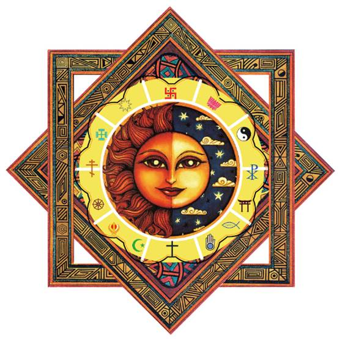

世界宗教文化中心
- 
- 世界宗教文化中心LOGO
世界宗教文化中心简介
世界文化丰富多彩，纵观世界文化史，她更是一幅绚丽多彩的画面。从古代五大文明美索不达米亚文世明（两河流域文明）、古埃及文明、古印度文明、古中国文明和古希腊文明，到现在的万花齐放，百家争鸣。年代不断地更替，社会不断地进步，文化不断地发展。在这悠久的文化历史中宗教文化绝对占有浓重的一笔。宗教作为一种意识形态，一种特殊的社会文化体系，既可以适应不同时代的社会发展要求，也可以适应同一时代不同性质的社会制度，适应人类政治、经济、文化的发展要求，这是宗教产生发展的规律，也是宗教将长期存在的内在机制。
在重庆金刀峡国家级风景区 建设佛教、基督教、伊斯兰教、道教、犹太教、印度教、神道教、摩尼教、锡克教等等世界各大小宗教的教堂、寺庙、宫、观，修建大型浮雕展现各教派创始人成长史、核心教义、现在分布等，形成“宗教世界之窗”。只要世界上有的合法宗教在这里都可以找到，形成万教归一！